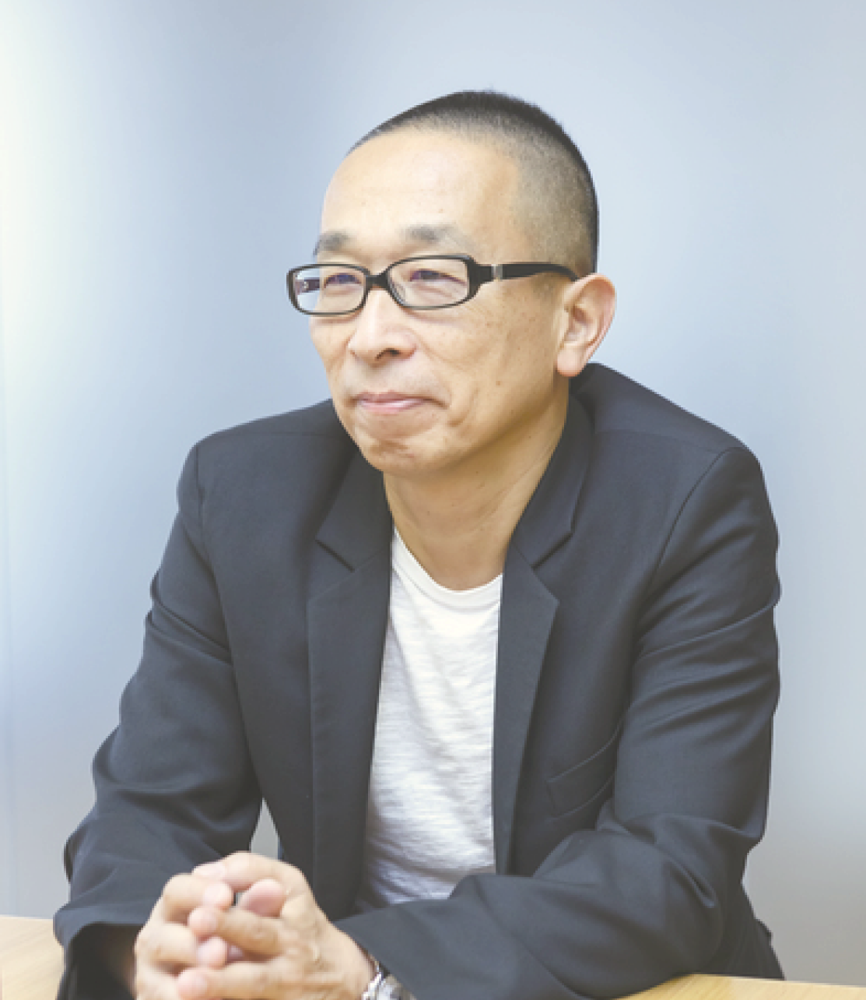

사토 타쿠 sato taku
1955년. 도쿄출생
1979년. 도쿄예술대학 디자인학과 졸업
1981년. 동 대학원 수료.(주)電通 입사
1984년. 佐藤卓디자인사무소 설립
자일리톨 껌의 패키지 디자이너로 잘 알려진 사토 타쿠는
정제된 시각 언어를 통해 사물의 본질을 전달하는 데 뛰어난 재능을 보여주는 실력자로 통한다. 디자인 해부라는 전시와 저술을 통해 자신이 디자인해왔던 대상을 그 제작 과정에서부터 폐기되기까지의 전 과정을 마치 외과의사와 같은 시각에서 철저하게 분석하는 작업을 통해 디자인이 이 사회에 어떻게 존재해야 하는가를 스스로 묻고 답하는 실험을 계속해왔다.
또한 우리가 일상에서 아무 생각 없이 소비하고 있는 물이나 쌀을 테마로 그 본질은 무엇이고 우리가 디자인으로 해결할 수 있는 문제는 무엇인지를 끊임없이 탐구하는 자세의 디자이너로 평가
받고 있다.
패션 디자이너 이세이 미야케와의 콜라보레이션을 통해 브렌딩 디자인부터 시작한 아트디렉팅 작업 가운데 2008년 제작한
의 연작 포스터는 이세이 미야케의 패션 작품을 스시 모양으로 연출하여 촬영한 것이다. 이를 통해 신소재 패브릭의 부드러우면서도 잘 늘어나는 특성과 함께 일본스러움을 최대한 강조하고 있다.그래픽디자인을 중심으로 상품개발, 포장 디자인, 제품 디자인, 브랜딩 등 폭 넓은 분야에서 활약 중. 지금까지「닛카ㆍ퓨어멀트」상품기획, 상품디자인, 광고 아트ㆍ디렉션을 비롯하여「롯데ㆍ껌시리즈」「헤네시ㆍ나제나」「RMK스킨케어시리즈」「메이지(明治) 맛있는 우유」등의 상품디자인을 담당. 기타「1999 워싱톤ㆍ내셔널ㆍ갤러리 전」「2000 피카소 어린이의 세계 전」등의 그래픽디자인, 2000년도「ADC연감」및「ADC전」등의 아트ㆍ디렉션,「TOYOTAㆍVISTA」「BS아사히(朝日)」등의 VI디자인이 있다.
주요 수상 경력
도쿄ADC상, 마이니치(每日)디자인상, JAGDA신인상, 도쿄TDC동상, 뉴욕ADC은상, 일본 패키지디자인대상 수상, G마크 금상, 디자인 포럼 금상 등